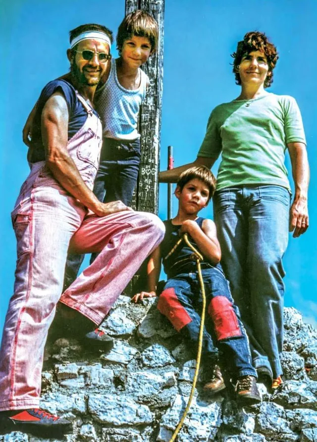

Audio
Alexander Luczy, czyli Włóczęga gór
Alexander Luczy, alias Tulák hôr
Alexander – góral z ciała i duszy, zdobywca skalnych szczytów, ratownik, fotograf, oryginalny twórca kolaży i emigrant. W 1969 roku wyemigrował do Szwajcarii, gdzie kontynuował swój górski styl życia.
Opowieść audio z książki „Tatranskí, alpskí, himalájski nosiči a iní horali”.
Płatność i pobranie plików przez Payhip. Payhip otworzy się w nowym oknie.
Fragment tekstu
Alexander Luczy, ciałem i duszą góral, zdobywca skalnych wierzchołków, ratownik, fotograf, oryginalny twórca kolaży, emigrant, nieudawany kumpel z prawdziwym człowieczeństwem w duszy. Šani należy do starej gwardii głośnych nazwisk i wielkich czynów pokroju Gejzy Haaka, Michala Orolina, Milana Kriššáka, ale też innych zaprawionych w bojach wyg. Jako pisarz wydał swój debiut *Zážitky a príhody horského vagabunda – tuláka hôr* (Przeżycia i przygody górskiego wagabundy – włóczęgi gór). W 1969 roku wyemigrował do Szwajcarii.
Jak taki emigrant wygląda z bliska?
Dwaj wspinacze wiszą w pionowej ścianie. Są w sytuacji bez wyjścia. Koniec. Amen. Nie pomoże im nawet modlitwa. Leje jak z cebra, grzmoty biją, błyskawice krzyżują niebo. Sił wyraźnie im ubywa. Wola przetrwania słabnie. Ich życie wisi na włosku.
…
Fragment początku polskiego tłumaczenia. Pełnej polskiej wersji jeszcze nie ma w sprzedaży.